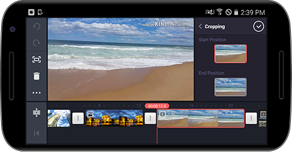

비디오 크로핑
원하는 비디오에서
크로핑 메뉴를 선택하시면 비디오 처음 시작 시점과 마지막 시점의 비디오 사이즈와 각도 모두 조절할 수 있습니다. 재생할 경우 비디오가 자연스럽게 움직입니다.

 크로핑 메뉴를 선택하시면 비디오 처음 시작 시점과 마지막 시점의 비디오 사이즈와 각도 모두 조절할 수 있습니다. 재생할 경우 비디오가 자연스럽게 움직입니다. 크로핑 메뉴를 선택하시면 비디오 처음 시작 시점과 마지막 시점의 비디오 사이즈와 각도 모두 조절할 수 있습니다. 재생할 경우 비디오가 자연스럽게 움직입니다.
크로핑 메뉴를 선택하시면 비디오 처음 시작 시점과 마지막 시점의 비디오 사이즈와 각도 모두 조절할 수 있습니다. 재생할 경우 비디오가 자연스럽게 움직입니다. 크로핑 메뉴를 선택하시면 비디오 처음 시작 시점과 마지막 시점의 비디오 사이즈와 각도 모두 조절할 수 있습니다. 재생할 경우 비디오가 자연스럽게 움직입니다.